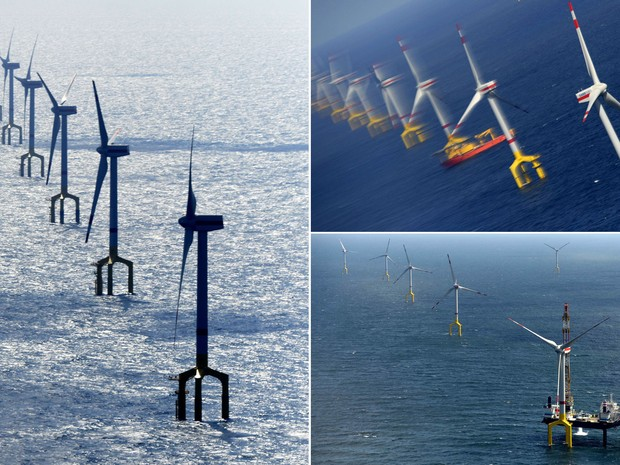

Noticias
Estudo descarta impacto climático causado por turbinas eólicas
Torres causam mudanças locais, mas não terão influência em larga escala. Energia renovável deve ser 20% da matriz total da Europa em 2020.

Os geradores eólicos podem modificar localmente a temperatura e as chuvas, mas o impacto das instalações na Europa não é
significativo para o clima global, concluiu um estudo realizado por cientistas franceses.
Nos últimos anos, alguns estudos deixaram em evidência os possíveis efeitos das grandes instalações eólicas
sobre a meteorologia, mas os resultados mais significativos não puderam ser quantificados, destacou a pesquisa
divulgada esta semana na revista "Nature Communications".
Alguns cientistas tinham sugerido que os geradores eólicos eram capazes de provocar um aumento das temperaturas e das
chuvas devido à forma como misturam camadas de ar frio e quente. Isso gerou o temor de que as torres provocassem mudanças
a milhares de quilômetros de distância.
A pesquisa da "Nature" indica que as simulações em escala regional não tiveram resultados conclusivos sobre o impacto dos
rotores, que se mostrou insignificante.
Simulação do clima em 2020
Os cientistas, liderados pelo francês Robert Vautard, do Laboratório de Ciências do Clima e do Meio Ambiente,
examinaram os efeitos potenciais das turbinas eólicas sobre o clima regional europeu em 2020, se os planos da União
Europeia para limitar as mudanças climáticas forem totalmente implementados.
Conforme esses planos, as energias renováveis devem representar pelo menos 20% da matriz energética regional. Em seus
cálculos, os especialistas projetaram o impacto local no clima dos rotores eólicos existentes em 2012, inclusive os marinhos,
para calcular os efeitos futuros. Os especialistas concluíram que o impacto no clima seria "limitado" em 2020.
Em certas condições, as temperaturas poderiam aumentar ou diminuir 0,3ºC e as chuvas, variar até 5%. "O impacto é menor do
que a variabilidade natural interanual ou do que as mudanças esperadas com as emissões de gases de efeito estufa", concluiu
o estudo.